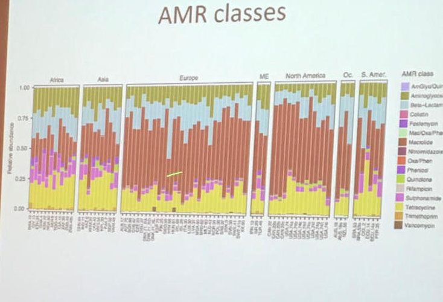
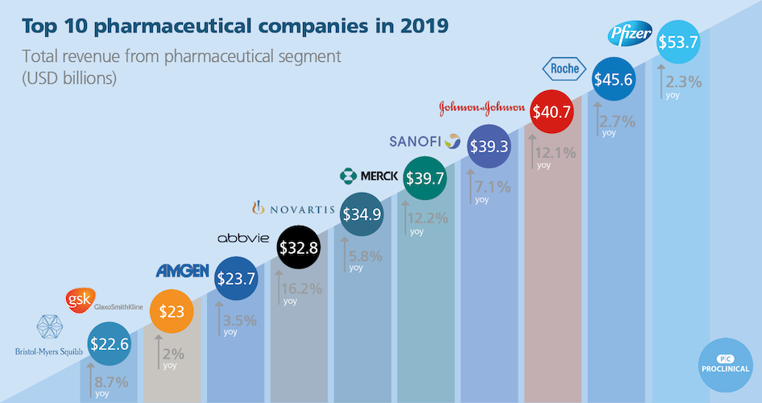
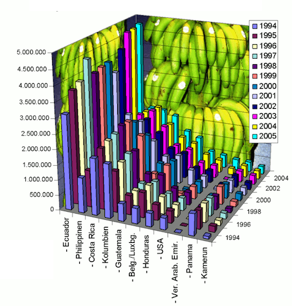
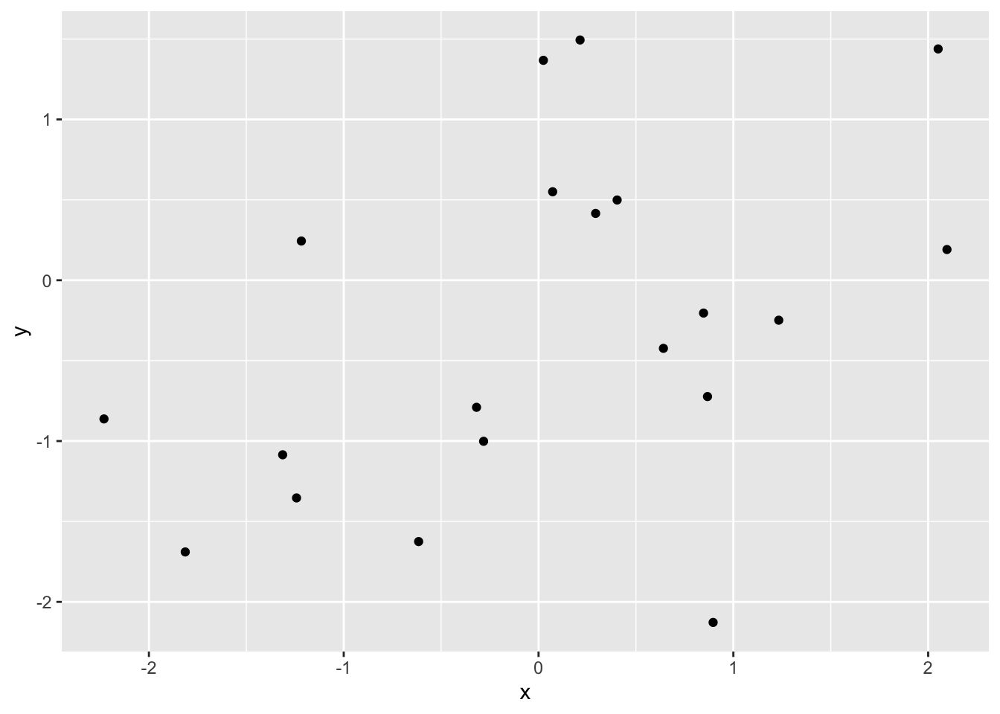
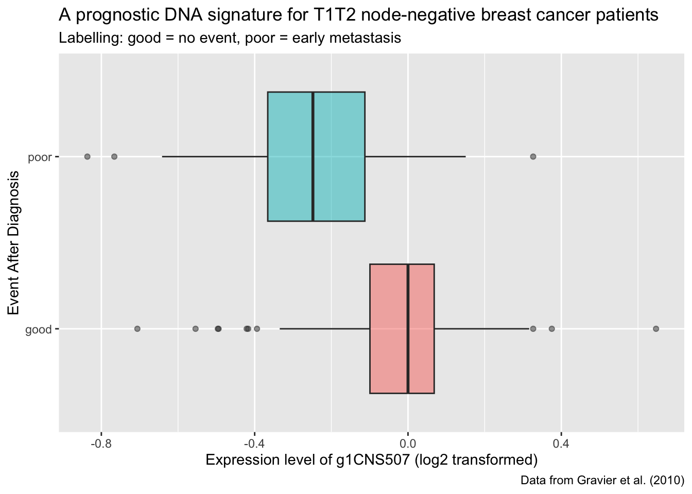
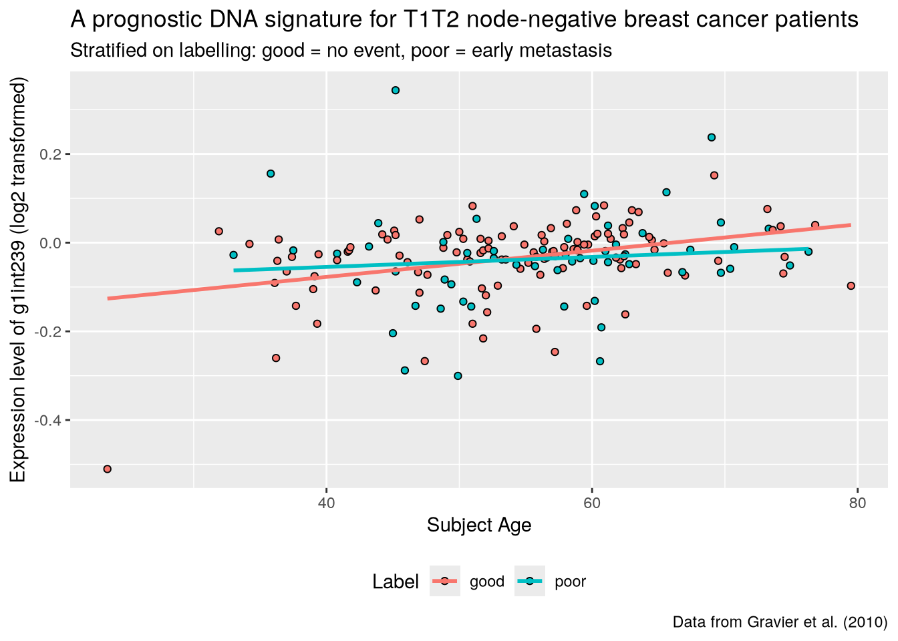

Lab 2: Data Visualisation I
Package(s)
Schedule
- 08.00 - 08.15: pre-course anonymous questionaire Walk-through
- 08.15 - 08.30: Recap: RStudio Cloud, RStudio and R - The Very Basics (Live session)
- 08.30 - 09.00: Lecture
- 09.00 - 09.15: Break
- 09.00 - 12.00: Exercises
Learning Materials
Please prepare the following materials:
- Book: R4DS2e: Chapter 1 Data Visualisation
- Paper: “A Layered Grammar of Graphics” by Hadley Wickham
- Video: The best stats you’ve ever seen
- Video: The SDGs aren’t the same old same old
- Video: EMBL Keynote Lecture - “Data visualization and data science” by Hadley Wickham
- Primer: If you are not familiar with working with paths and projects, please read this primer on Paths and Projects
Unless explicitly stated, do not do the per-chapter exercises in the R4DS2e book
Learning Objectives
A student who has met the objectives of the session will be able to:
- Explain the basic theory of data visualisation
- Decipher the components of a simple ggplot
- Use
ggplotto do basic data visualisation
Exercises
Prelude
Discuss these 4 visualisations with your group members
- What is problematic?
- What could be done to rectify?
Click here for visualisation 1
Note, AMR = Antimicrobial Resistance

Click here for visualisation 2

Click here for visualisation 3

Click here for visualisation 4
Getting Started
First of all, make sure to read every line in these exercises carefully!
If you get stuck with Quarto, revisit R4DS2e: Chapter 28 Quarto or take a look at the Comprehensive guide to using Quarto
If you get stuck working with paths and projects, remember there is a primer to help you, see the preparations materials for this session
Go to the R for Bio Data Science RStudio Cloud Server session from last time and log in and choose the project you created.
Make sure you are working in the right project, check in the upper right corner, it should say
r_for_bio_data_scienceCreate a NEW Quarto Document for today’s exercises, e.g. lab02_exercises.qmd and remember to SAVE it in the same location as your .Rproj-file
Recall the layout of the IDE (Integrated Development Environment)

Then, before we start, we need to fetch some data to work on.
- See if you can figure out how to create a new folder called “data”, make sure to place it the same place as your my_project_name.Rproj file.
Then, without further ado, run each of the following lines separately in your console:
target_url <- "https://github.com/ramhiser/datamicroarray/raw/master/data/gravier.RData"
output_file <- "data/gravier.RData"
curl::curl_download(url = target_url, destfile = output_file)- Using the
filespane, check the folder you created to see if you managed to retrieve the file.
Recall the syntax for a new code chunk:
```{r}
#| echo: true
#| eval: true
# Here goes the code... Note how this part does not get executed because of the initial hashtag, this is called a code-comment
1 + 1
my_vector <- c(1, 2, 3)
my_mean <- mean(my_vector)
print(my_mean)
```IMPORTANT! You are mixing code and text in a Quarto Document! Anything within a “chunk” as defined above will be evaluated as code, whereas anything outside the chunks is markdown. You can use shortcuts to insert new code chunks:
- Mac: CMD + OPTION + i
- Windows: CTRL + ALT + i
Note, this might not work, depending on your browser. In that case you can insert a new code chunk using  or You can change the shortcuts via “Tools” > “Modify Keyboard shortcuts…” > Filter for “Insert Chunk” and then choose the desired shortcut. E.g. change the shortcut for code chunks to Shift+Cmd+i or similar.
or You can change the shortcuts via “Tools” > “Modify Keyboard shortcuts…” > Filter for “Insert Chunk” and then choose the desired shortcut. E.g. change the shortcut for code chunks to Shift+Cmd+i or similar.
- Add a new code chunk and use the
load()function to load the data you retrieved.
Click here for a hint
Remember, you can use?load to get help on how the function works and remember your project root path is defined by the location of your .Rproj file, i.e. the path. A path is simply where R can find your file, e.g. /home/projects/r_for_bio_data_science/ or similar depending on your particular setup.
Now, in the console, run the ls() command and confirm, that you did indeed load the gravier data.
- Read the information about the
gravierdata here
Now, in your Quarto Document, add a new code chunk like so
library("tidyverse")This will load our data science toolbox, including ggplot.
Create data
Before we can visualise the data, we need to wrangle it a bit. Nevermind the details here, we will get to that later. Just create a new chunk, copy/paste the below code and run it:
set.seed(676571)
cancer_data=mutate(as_tibble(pluck(gravier,"x")),y=pluck(gravier,"y"),pt_id=1:length(pluck(gravier, "y")),age=round(rnorm(length(pluck(gravier,"y")),mean=55,sd=10),1))
cancer_data=rename(cancer_data,event_label=y)
cancer_data$age_group=cut(cancer_data$age,breaks=seq(10,100,by=10))
cancer_data=relocate(cancer_data,c(pt_id,age,age_group,pt_id,event_label))Now we have the data set as a tibble, which is an augmented data frame (we will also get to that later):
cancer_data# A tibble: 168 × 2,909
pt_id age age_group event_label g2E09 g7F07 g1A01 g3C09 g3H08
<int> <dbl> <fct> <fct> <dbl> <dbl> <dbl> <dbl> <dbl>
1 1 34.2 (30,40] good -0.00144 -0.00144 -0.0831 -0.0475 1.58e-2
2 2 47 (40,50] good -0.0604 0.0129 -0.00144 0.0104 3.16e-2
3 3 60.3 (60,70] good 0.0398 0.0524 -0.0786 0.0635 -3.95e-2
4 4 57.8 (50,60] good 0.0101 0.0314 -0.0218 0.0215 8.68e-2
5 5 54.9 (50,60] good 0.0496 0.0201 0.0370 0.0311 2.07e-2
6 6 58.8 (50,60] good -0.0664 0.0468 0.00720 -0.370 2.88e-3
7 7 52.9 (50,60] good -0.00289 -0.0816 -0.0291 -0.0249 -1.74e-2
8 8 74.5 (70,80] good -0.198 -0.0499 -0.0634 -0.0298 3.00e-2
9 9 47.6 (40,50] good 0.00288 0.0201 0.0272 0.0174 -7.89e-5
10 10 55.8 (50,60] good -0.0574 -0.0574 -0.0831 -0.0897 -1.01e-1
# ℹ 158 more rows
# ℹ 2,900 more variables: g1A08 <dbl>, g1B01 <dbl>, g1int1 <dbl>, g1E11 <dbl>,
# g8G02 <dbl>, g1H04 <dbl>, g1C01 <dbl>, g1F11 <dbl>, g3F05 <dbl>,
# g3B09 <dbl>, g1int2 <dbl>, g2C01 <dbl>, g1A05 <dbl>, g1E01 <dbl>,
# g1B05 <dbl>, g3C05 <dbl>, g3A07 <dbl>, g1F01 <dbl>, g2D01 <dbl>,
# g1int3 <dbl>, g1int4 <dbl>, g1D05 <dbl>, g1E05 <dbl>, g1G05 <dbl>,
# g1C05 <dbl>, g1G11 <dbl>, g2D08 <dbl>, g2E06 <dbl>, g3H09 <dbl>, …- Q1: What is this data?
Click here for a hint
Where did the data come from?- Q2: How many rows and columns are there in the data set in total?
Click here for a hint
Do you think you are the first person in the world to try to find out how many rows and columns are in a data set inR?
- Q3: Which are the variables and which are the observations in relation to rows and columns?
ggplot - The Very Basics
General Syntax
The general syntax for a basic ggplot is:
ggplot(data = my_data,
mapping = aes(x = variable_1_name,
y = variable_2_name)) +
geom_something() +
labs()Note the + for adding layers to the plot
ggplotthe plotting functionmy_datathe data you want to plotaes()the mappings of your data to the plotxdata for the x-axisydata for the y-axisgeom_something()the representation of your datalabs()the x-/y-labels, title, etc.
Now:
- Revisit this illustration and discuss in your group what is what:

A very handy ggplot cheat-sheet can be found here
Basic Plots
Remember to write notes in your Quarto document. You will likely revisit these basic plots in future exercises.
Primer: Plotting 2 x 20 random normally distributed numbers, can be done like so:
ggplot(data = tibble(x = rnorm(20),
y = rnorm(20)),
mapping = aes(x = x,
y = y)) +
geom_point()
Using this small primer, the materials you read for today and the cancer_data you created, in separate code-chunks, create a:
- T1: scatter plot of one variable against another
- T2: line graph of one variable against another
- T3: box plot of one variable (Hint: Set
x = "my_gene"inaes()) - T4: histogram of one variable
- T5: densitogram of one variable
Remember to write notes to yourself, so you know what you did and if there is something in particular you want to remember.
- Q4: Do all geoms require both
xandy?
Extending Basic Plots
T6: Pick your favourite gene and create a box plot of expression levels stratified on the variable
event_labelT7: Like T6, but with densitograms GROUP ASSIGNMENT
T8: Pick your favourite gene and create a box plot of expression levels stratified on the variable
age_group- Then, add stratification on
event_label - Then, add transparency to the boxes
- Then, add some labels
- Then, add stratification on
T9: Pick your favourite gene and create a scatter plot of expression levels versus
age- Then, add stratification on
event_label - Then, add a smoothing line
- Then, add some labels
- Then, add stratification on
T10: Pick your favourite two genes and create a scatter plot of their expression levels
- Then, add stratification on
event_label - Then, add a smoothing line
- Then, show split into seperate panes based on the variable
age_group - Then, add some labels
- Change the
event_labeltitle of the legend
- Then, add stratification on
T11: Recreate the following plot

Q5: Using your biological knowledge, what is your interpretation of the plot?
T12: Recreate the following plot

Q6: Using your biological knowledge, what is your interpretation of the plot?
T13: If you arrive here and there is still time left for the exercises, you are probably already familiar with
ggplot- Use what time is left to challenge yourself to further explore thecancer_dataand create some nice data visualisations - Show me what you come up with!